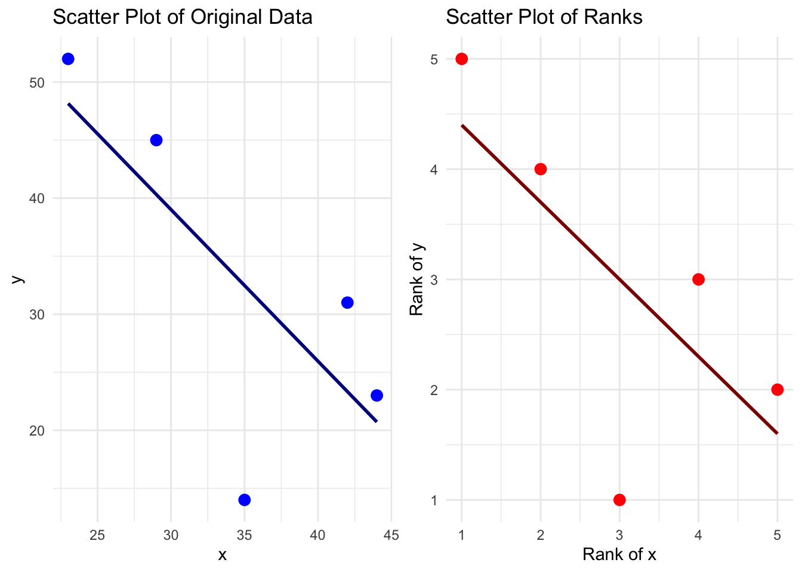

Correlation measures the strength and direction of association between two variables. While Pearson’s correlation requires a linear relationship and normally distributed data, and are measures, making them ideal for analyzing data that may not be linear or normally distributed.
2.1 Spearman’s Rank Correlation
Spearman’s correlation coefficient \(\rho\) is based on data. For two variables \(X\) and \(Y\), we replace each observation by its rank.
\(\rho = 1 - \frac{6 \sum d^2}{n(n^2 - 1)}\)
to compute Spearman’s correlation coefficient \(\rho\). This measure is based on ranked data. For two variables \(X\) and \(Y\), we first replace each observation by its rank. Once the data are ranked, Spearman’s \(\rho\) is computed similarly to Pearson’s correlation, but using the ranks instead of the raw values:
where \(r_{X_i}\) is the rank of the \(i\)-th observation of \(X\), \(r_{Y_i}\) is the rank of the \(i\)-th observation of \(Y\), and \(\bar{r}_{X}\) and \(\bar{r}_{Y}\) are the mean ranks of \(X\) and \(Y\), respectively.
Spearman’s \(\rho\) is then computed similarly to Pearson’s correlation but on these ranks:
where \(r_{X_i}\) is the rank of the \(i\)-th observation of \(X\), and \(r_{Y_i}\) is the rank of the \(i\)-th observation of \(Y\).
A value of \(\rho\) close to 1 indicates a strong positive monotonic relationship (as one variable increases, so does the other), while a value close to -1 indicates a strong negative monotonic relationship. A value around 0 suggests little or no monotonic association.
This method is robust to non-normality and outliers since it relies on the order (ranks) rather than the actual values.
# Load required librarieslibrary(ggplot2)# 1. Create a small datasetx <-c(23, 42, 35, 44, 29)y <-c(52, 31, 14, 23, 45)data <-data.frame(x = x, y = y)# 2. Compute the ranks for each variabledata$rank_x <-rank(data$x) # For x: 1,2,3,4,5 (already sorted)cat('r_X = ', data$rank_x)
r_X = 1 4 3 5 2
data$rank_y <-rank(data$y) # For y: gives ranks corresponding to [2,1,4,3,5]cat('r_X = ', data$rank_y)
r_X = 5 3 1 2 4
# 3. Compute differences between ranks and their squaresdata$d <- data$rank_x - data$rank_ydata$d2 <- data$d^2# Sum of squared differencessum_d2 <-sum(data$d2)# Number of observationsn <-nrow(data)# 4. Calculate Spearman's correlation using the formula:spearman_rho <-1- (6* sum_d2) / (n * (n^2-1))# Print computed Spearman correlationprint(paste("Spearman correlation (rho):", round(spearman_rho, 2)))
[1] "Spearman correlation (rho): -0.7"
# Expected output: 0.8# 5. Visualize the data using ggplot2# Plot 1: Original Data Scatter Plot with a Linear Fitp1 <-ggplot(data, aes(x = x, y = y)) +geom_point(color ="blue", size =3) +geom_smooth(method ="lm", se =FALSE, color ="darkblue") +ggtitle("Scatter Plot of Original Data") +xlab("x") +ylab("y") +theme_minimal()# Plot 2: Scatter Plot of Ranksp2 <-ggplot(data, aes(x = rank_x, y = rank_y)) +geom_point(color ="red", size =3) +geom_smooth(method ="lm", se =FALSE, color ="darkred") +ggtitle("Scatter Plot of Ranks") +xlab("Rank of x") +ylab("Rank of y") +theme_minimal()# Display the plots side by sidegrid.arrange(p1, p2, ncol =2)

# Optionally, print the data frame to show ranks and differencesprint(data)
Both Spearman’s \(\rho\) captures the relationship between two variables. They are more robust to outliers and non-linear relationships than Pearson’s correlation. In the context of areal data (e.g., crime rates, population density across polygons), these measures can reveal how variables co-vary without assuming linearity or normality.
Spatial Neighborhood Matrices
This section is based on Spatial statistics for data science theory and practice with R. See (Moraga 2023).
2.2 Neighbors Based on Contiguity
Queen Contiguity: Two polygons are considered neighbors if they share any common point (i.e., an edge or a vertex). Mathematically, if polygons \(p_i\) and \(p_j\) touch at any point, then \(A\_{ij} = 1\).
Rook Contiguity: Two polygons are neighbors only if they share a common edge. That is, if polygons \(p_i\) and \(p_j\) share a boundary segment, then \(A\_{ij} = 1\); merely touching at a corner does not count.
Neighbors based on contiguity. Area of interest is represented in black and its neighbors in gray.
# Create a spatial neighbors list using Queen contiguity# (i.e., polygons are considered neighbors if they share any point: edge or vertex)nb <- spdep::poly2nb(delitos_data, queen =TRUE)head(nb)
# Neighbors of Order k Based on Contiguity# Neighbors of second ordernblags <- spdep::nblag(neighbours = nb, maxlag =2)# Combine neighbors of all orders up to the specified lag (in this case, up to order 2)# This creates a cumulative neighbor list including first- and second-order neighborsnblagsc <- spdep::nblag_cumul(nblags)table(sapply(nblagsc, length))
K-Nearest Neighbors: For each polygon, the ( k ) nearest neighbors are identified based on a distance threshold.
Distance Threshold: The distance threshold can be defined as a fixed value or as a function of the average distance between polygons.
is a method that defines neighbors based on distance rather than contiguity. For each spatial unit \(p_i\), the \(k\) closest units (according to Euclidean distance or other metric) are selected as neighbors.
Formally, let \(D(p_i, p_j)\) be the distance between polygons \(p_i\) and \(p_j\). Then, the neighbor set \(N_k(p_i)\) is defined as:
\(N_k(p_i) = p_j\) : \(p_j\) is among the \(k\) nearest polygons to \(p_i\).
This ensures that each polygon has exactly \(k\) neighbors, which is useful when spatial units are irregular or disconnected.
We define spatial k-nearest neighbour problem as finding k observations from a set of candidates C that are the most similar to the given a landmark L[i], where the similarity is defined by a distance function d(L[i], S[j]) = st_distance(L[i], S[j])
# Compute centroids of the polygonscoo <-st_centroid(delitos_data)# Create a neighbor list where each polygon (based on its centroid `coo`) is connected # to its 3 nearest neighbors using k-nearest neighbors (k = 3)nb <-knn2nb(knearneigh(coo, k =3)) # k number nearest neighbors# Polygons with neighborstable(sapply(nb, length))
3
44325
# Subset data to the first 10 polygonsdelitos_data_10 <- delitos_data[1:100, ]# Recompute neighbor list for these 10 polygons to avoid index mismatchesnb_10 <-knn2nb(knearneigh(st_centroid(delitos_data_10), k =3))# Compute centroids for the 10 polygonscoords_10 <-st_coordinates(st_centroid(delitos_data_10))# Plot the first 10 polygons and overlay neighbor connections in redplot(st_geometry(delitos_data_10), border ="lightgray", main ="First Polygons with 3 Nearest Neighbors")plot.nb(nb_10, coords_10, add =TRUE, col ="red", lwd =2)
2.4 Neighbors Based on Distance
# Create a neighbor list using distance-based contiguity:# Polygons are considered neighbors if their centroids are within 0.4 units (e.g., degrees) apartnb <-dnearneigh(x =st_centroid(delitos_data), d1 =0, d2 =0.4)# Polygons with neighborshist(sapply(nb, length))
# Subset data to the first 10 polygonsdelitos_data_10 <- delitos_data[1:100, ]# Recompute neighbor list for these 10 polygons to avoid index mismatchesnb_10 <-dnearneigh(x =st_centroid(delitos_data_10), d1 =0, d2 =0.4)# Compute centroids for the 10 polygonscoords_10 <-st_coordinates(st_centroid(delitos_data_10))# Plot the first 10 polygons and overlay neighbor connections in redplot(st_geometry(delitos_data_10), border ="lightgray", main ="First Polygons with 3 Nearest Neighbors")plot.nb(nb_10, coords_10, add =TRUE, col ="red", lwd =2)
Determining an Appropriate Upper Distance Bound: To ensure that each area in a spatial dataset has at least (k) neighbors, we can determine an appropriate upper distance bound by first computing the (k) nearest neighbors for each area. For example, using the Queen contiguity method, one may use the function with (k=1) to obtain the nearest neighbor for each polygon. This yields a matrix of neighbor IDs, which is then converted into a neighbor list (of class ) via . Next, the function computes the distances along the links between each area and its neighbor. By summarizing these distances (e.g., using ), we can observe the range of distances.
# Compute k-nearest neighbors: for each polygon centroid, find its 1 nearest neighbor (k = 1)nb1 <-knn2nb(knearneigh(coo, k =1))# Calculate the Euclidean distances between each polygon and its nearest neighbordist1 <-nbdists(nb1, coo)# Summarize all distances to understand the minimum, maximum, and quartilessummary(unlist(dist1))
Min. 1st Qu. Median Mean 3rd Qu. Max.
0.001377 0.031220 0.044383 0.053259 0.063116 1.196872
# Create a distance-based neighbor list: polygons whose centroids are within [0, 1.2] units are considered neighborsnb <-dnearneigh(x =st_centroid(delitos_data), d1 =0, d2 =1.2)# Polygons with neighborshist(sapply(nb, length))
2.5 Neighborhood Matrices
# Spatial weights matrix using Queen contiguity (binary weights)# 'queen = TRUE' considers shared edges OR vertices as neighborsnb <-poly2nb(delitos_data, queen =TRUE)# Convert the neighbor list to a spatial weights list object# 'style = "W"' row-standardizes the weights (sums to 1)# 'zero.policy = TRUE' avoids errors when some polygons have no neighborsnbw <- spdep::nb2listw(nb, style ="W", zero.policy =TRUE)# Display the first 10 rows of spatial weights (for the first 10 polygons)nbw$weights[1:10]
# Spatial weights matrix based on inverse distance values# Compute centroids of polygonscoo <-st_centroid(delitos_data)# Use Queen contiguity again to define neighborsnb <-poly2nb(delitos_data, queen =TRUE)# Compute distances between neighbors based on their centroidsdists <-nbdists(nb, coo)# Create inverse distance weights (1/distance) for each pair of neighborsids <-lapply(dists, function(x){1/x})# Create a listw object using binary style ("B" = no standardization)nbw <-nb2listw(nb, glist = ids, style ="B", zero.policy =TRUE)# Display the first 10 inverse-distance-based weightsnbw$weights[1:10]

![We define spatial k-nearest neighbour problem as finding k observations from a set of candidates C that are the most similar to the given a landmark L[i], where the similarity is defined by a distance function d(L[i], S[j]) = st_distance(L[i], S[j])](images/nearest_neighbour.png)